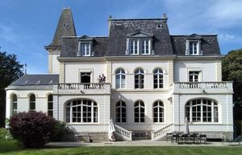
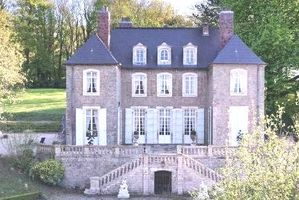
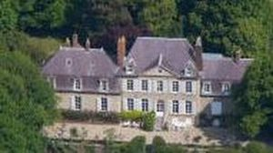
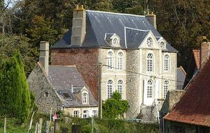
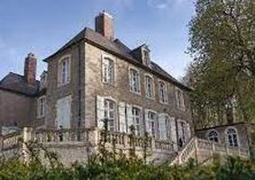

Recensement Jean-Claude Truffet
| Département | 62 — Pas-de-Calais |
| Canton | Boulogne-sur-Mer |
| Commune | Vimille |
| Type d'édifice | Château |
| Période d'origine | XVII |
| Coordonnées GPS | 50° 45' 50" Nord, 1° 38' 01" Est |





Trois châteaux dans cet article ; Billeauville, Pipots et Petit-Denacre. BILLEAUVILLE Cet ancien manoir a été transformé en château en 1777. Les ailes, les pavillons en retour, les fenêtres ainsi que le monumental pigeonnier datent de la fin du XVIe siècle. Billeauville fut habité au siècle dernier par Jean-Baptiste de Rosny, maire de Boulogne et député du Pas-de-Calais sous la seconde Restauration, et par son fils Hector de Rosny, auteur dun volumineuse livre "Histoire du Boulonnais". Léthymologie parlante de ce nom est vérifiée par lagrément du site. En effet, il y avait là jadis un moulin à billots destiné à faire de lhuile et qui fût détruit par les Anglais quand ils occupèrent Boulogne. Cest pourquoi on trouve encore parfois écrit Billoville. Le parc du château est inscrit au pré-inventaire des jardins remarquables. PIPOTS Autrefois, on nommait ainsi une ferme touchant le bourg de Vimille au bas de la route de Calais. Aujourdhui, les regards sarrêtent sur le château des Pipôts. Situé à lentrée du village, il est lune des plus vieilles propriétés de Wimille car elle est citée dans des écrits datant de 1400 comme appartenant à une ancienne famille de Laboureurs. Il fut occupé par les Allemands durant la deuxième guerre mondiale et a été le témoin direct des événements de lhistoire de France. Du haut des marches du domaine, on peut contempler tout dabord un jardin à la française. Les arbres centenaires attirent les curieux des marronniers, un tulipier de Virginie, des frênes. Lallée principale est bordée de tilleuls. Ça et là, jaillissent des fontaines naturelles.
PETIT-DENACRE à Saint martin-Boulogne La Famille de Bourbourg, était les châtelains de la fin du XIe siècle à la moitié du XIIIe siècle. Louis de la Roche achète la Raterie et en 1763 Edme-Antoine-François de la Pasture l'acquiert. En 1777, un nouvel acquéreur Ducrocq de Bancres fit entreprendre la construction du petit château, en pierre grise de pays, coiffé dardoises, le corps de logis principal, auquel sont accolées de chaque côté les dépendances, présente deux étages un niveau de combles et un rez-de-chaussée Côté cour un avant corps saillant est doté d'un escalier à double volées, outres les baies sont à petits carreaux et tracées en plein cintre. Un cordon de pierres les sépare et ceinture tout le bâtiment. En 1788 à 1868 jacques Boucher de Perthes séjourna au château chez Mr de Cossette. En 1940-1944 occupation allemande, la partie droite de la construction a été aménagée en blockhaus au cours de la seconde guerre mondiale. A la mort de Mr de Cossette en 1834 le domaine passa dans différentes mains et au début du XXe siècle à la famille Huret et aujourd'hui à la famille Hubly. Éléments protégés MH : les façades et les toitures ; la salle à manger et le salon au premier étage avec leur décor ; le bassin rond, la fabrique et la fontaine dans le jardin : inscription par arrêté du 26 juin 1978.
Billauviie; Jean-Baptiste de Rosny Pipots; famille de Laboureurs Petit Denacre famille de Ducrocq de Bancres"
Trois châteaux dans cet article ; Billeauville grav-1, Pipots grav-3-4 et Petit-Denacre grav-2. Petit Denacre GPS : 50° 45' 50" Nord, 1° 38' 01" Est